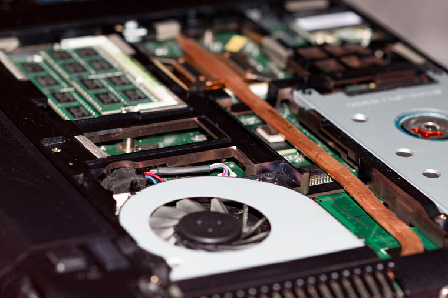

В каждом ноутбуке есть комплектующие. Для новичка это слово звучит страшно, мегагерцы, гигабайты, накопители - все это с виду сложно и не понятно, однако я постараюсь вкратце объяснить, что к чему
Процессоры
Центральный процессор(CPU) – это ядро компьютера, так сказать основной его мозг, тот компонент, который выполняет основную массу работы компьютера. Называют оббычно просто процессором, а иногда из-за его кремневой основы "камнем".
Вообще для процессора основными параметрами можно назвать: тактовую частоту, архитектуру, производительность, количество ядер, используемый техпроцесс, энергопотребление, объем кэшей .
Тактовая частота – вообще для большинства людей не связанных с производством компьютерной техники, это просто некая статичная цифра, которая в некоторых случаях может указать на производительность, чем больше тем быстрее, но чем выше этот параметр, тем, как правило, выше тепловыделение (что в свою очередь может стать проблемой, но только в случае если тепла очень много выделяется), и стоит отметить, что в "голом" виде этот параметр мало что показывает, более важна архитектура, количество ядер и т.д., именно по этому для процессоров введен параметр производительности, к сожалению, узнать его в магазине или увидеть на ценнике почти не реально.
Архитектура – архитектур много и чтобы разбираться в них нужно обладать не дюжими знаниями, но если вкратце, это внутренняя структура центрального процессора.
Производительность – некоторый параметр обозначающий конечную производительность центрального процессора, встретить можно разве что в Интернете, консультанты зачастую просто не знают этот параметр, хотя он более точно показывает на сколько мощный процессор. Измеряется во флоп(FLOP), ввиду большого значения чаще можно увидеть производительность в террафлопc, хотя эта мера производительности является далеко не идеальной.
Количество ядер – на данный момент, большинство процессоров являются многоядерными, от 2 до 6 ядер в процессоре, а со временем их будет только больше. Но одно лишь количество ядер не обуславливает повышение производительности ЦПУ, например, 2-х ядерные процессоры Intel успешно соперничают и могут обгонять в производительности 4-х или даже 6-ти ядерные процессоры AMD.
Используемый техпроцесс – фактически это цифра показывает размеры элемента процессора (транзистора), польза от этой информации такова, при снижении техпроцесса увеличивается конечная производительность процессора (т.к. банально транзисторов больше), а так же, как правило, снижается энергопотребление и соответственно тепловыделение. Ну и конечно чем меньше тех процесс, тем процессор новее.
Энергопотребление – параметр процессора, показывающий как энергопотребление (в Ваттах) так и тепловыделение, оба эти параметра важны! Энергопотребление нужно знать, чтобы рассчитать необходимую мощность для блока питания, как правило, это 60-100Вт, для настольных систем, для ноутбуков параметр ниже, но лучше уж проконсультироваться у продавца, чем самому считать. Тепловыделение необходимо больше для производителей систем охлаждения, вам же если понадобиться купить новую систему охлаждения, можно просто поинтересоваться подходит ли она для данного процессора.
Объем кэшей – вообще это важный параметр, но не редко он даже продавцам не о чем не говорит, фактически это внутренняя память процессора, вас она не должна беспокить. Вообще существует несколько видов кэша, кэш 1-го уровня (Level 1 Cache), а также 2-го уровня и 3-го (в будущем наверняка будет больше), сокращенно пишутся L1 Cache, и соответственно L2, L3.
Видеокарты

Видеокарта – он же графический ускоритель, компонент компьютера отвечающий за вывод изображения и формирования графики, например в играх. Видеокарта необходима для работы компьютера иначе он просто не запустится, да и картинка не появиться. На данный момент существуют различные виды ускорителей, для домашних систем (настольных), мобильных (ноутбуков, коммуникаторов и даже телефонов), для полупрофессионального и профессионального использования. Также есть различия по "целям ускорения", есть ускорители двухмерной графики (2D) и ускорители трехмерной графики(3D). 2D-ускорители не всегда работают с 3D-графикой, но они скорее относятся к полупрофессиональным и профессиональным ускорителям, они служат в основном для работы, например, с фотографией (например, в журналах которые печатают). Но не стоит думать, что 3D-ускорители не работают с 2D-графикой, работают! просто упор ставиться на 3D. Видеокарты для домашних компьютеров все являются 3D-ускорителями.
Графический процессор – это ядро видеокарты, фактически такой же как и центральный процессор, только специализирован он на обсчете графики. Для бытовых компьютеров, сейчас, на рынке присутствуют два производителя ATI с видеокартами Radeon, и NVIDIA с видеокартами GeForce.
Тип и объем памяти – существуют различные виды памяти для видеокарт, по функциональности они похожи на оперативную память, но в отличие от ОЗУ ее нельзя заменить. Вообще информация о типе и объеме памяти по большей части маркетинговый ход, т.е. модели одного уровня ATI, и NVIDIA, конкуренты, разница в их производительности не велика, как правило. Стоит заметить, что базовые модели создаются сбалансированными, тип и объем памяти на них соответствует графическому процессору. Встречаются модели с увеличенным объемом памяти, но увеличение памяти не всегда дает большой прирост производительности.
Система охлаждения – важный элемент в видеокарте! При работе графический процессор, как и память, очень сильно греются, и если их не охлаждать, то встроенная защита просто отключит устройство. Хорошее охлаждение гарантируют качественную долгую и бесперебойную работу. Конечно, на базовых моделях ставят соответствующую систему охлаждения, хотя из-за пыли и грязи она со временем может перестать справляться, но это мало вероятно. Обычно для охлаждения используют обычный радиатор и вентилятор, но сейчас все чаще встречаются модели с радиаторами на базе тепловых трубок, у них отвод тепла эффективней.
Частоты и шина памяти – частоты показываются в МГц, фактически определение скорости, пишут их, зачастую, в моделях, в которых частоты выше базовых, "разогнаны", это немного повышает производительность, но и увеличивает теплоотдачу. Шина памяти, пишется, например, 256bit. На самом деле это сугубо технический параметр и конечному пользователю он должен быть безразличен.
Оперативная память
Оперативная память – она же ОЗУ (RAM), она же опертивка. Служит для временного хранения данных, с которыми работает центральный процессор. Наверняка некоторые задаются вопросом «зачем?», ведь есть жесткий диск, есть память в процессоре. Ответ прост, необходимость хранить все больше и больше оперативных данных растет постоянно и память процессора(кэш) для этого очень мала, что касаемо жесткого диска, на нем храниться часть данных, но только часть, скорость работы оперативной памяти значительно быстрее чем скорость работы с жестким диском, потому ОЗУ и используется.
Основными характеристиками оперативной памяти являются: тип памяти, скорость памяти, тайминги, форм-фактор, объем. Тип памяти – по мере развития технологий и компьютерной техники появляются все больше типов памяти, точнее более новые вымещают с рынка старые. На данный момент распространены DDR3, хотя пока что и DDR2 присутствуют.
Скорость – скорость памяти измеряется в МГц, в информации о материнской плате можно встретить указания типа, DDR3-1333, число 1333 как раз и показывает скорость памяти, данный параметр указывают, чтобы не ошибиться в выборе памяти. Если вы, например, купите память со скоростью большей чем указано в информации о процессоре или материнской плате, пользы от этой завышенной скорости не будет никакой, а вот цена будет выше. Зачастую можно увидеть в информации о памяти запись типа, PC12800, это спецификация памяти, но я к сожалению не сильно в ней разбираюсь, потому что не сильно интересно, ту проще спросить какая скорость в МГц, хотя ее обычно пишут.
Тайминги – по сути, это еще один параметр скорости памяти, записывается обычно так "2-2-2". Чем ниже данные цифры тем память быстрее, однако не стоит забывать, что более низкие параметры, "стандартные" не указывают, как правило, должны обязательно поддерживаться материнской платой, иначе проку от них не будет, а ускоренная память, как я писал выше, стоит дороже.
Форм-фактор – форма исполнения памяти, отличаются размерами и количеством контактов. В персональных компьютерах используется DIMM память.
Объем – измеряется в ГБ или МБ, наиболее важный параметр для памяти. Для компьютеров на сейчас используют 2-6 ГБ памяти, меньше 2-х уже мало, больше 6-ти, пока что много, но ввиду того, что все постоянно меняется, не буду ничего конкретного рекомендовать. Также есть еще одна деталь, если сказать вкратце, память лучше работает в двух канальном режиме, т.е. лучше использовать 2 модуля памяти, например, вы решили взять себе 2 ГБ памяти, но эффективней она будет купите 2 модуля по 1-му ГБ.
Накопители
Накопители бывают двух типов - HDD (жесткий диск) и SSD. Работают они на разных архитектурах, поэтому имеют разную цену и характеристики
HDD довольно медленная и недолговечная память, однако недорогая. Не советовал бы брать ноутбук с таким накопителем - уж очень он тормозит систему в целом
SSD шустрая постоянная память, любые приложения, установленные на него будут загружаться быстрее (в том числе опрерационная система), но за нее придется заплатить больше. Тут уж решать вам.
Мониторы
Мониторы в ноутбуках бывают разных размеров, с разными матрицами и герцовками экрана
Размеры варьируются - тут смотрите сами, самый оптимальный, на мой взгляд, 15.6 дюймов - ноутбук с таким экраном лекго переносить. Размеры меньше еще компактнее, но уже появляется проблема с чтением информации, а большие размеры уже довольно тяжелые, но в то же время удобные в использовании.
Актуальных матриц только две - VA и IPS. Скажу одно - не берите VA - углы обзора и качество цветопередачи оставляет желать лучшего.
Герцовка экрана по стандарту - 60гц (герц - частота смены кадров в секунду), в принципе, этого хватает для любых повседневных задач. Однако, если вы любите поиграть в быстрые сетевые игры, можно взять матрицу с повышенной герцовкой - она приятна в играх и дает незначительное преимущество перед другими игроками.
Выводы
На этом, я думаю, все. Этих характеристик вполне хватит, чтобы выбрать достойный ноутбук, который будет радовать вас много лет =)

Наверх
Telegram